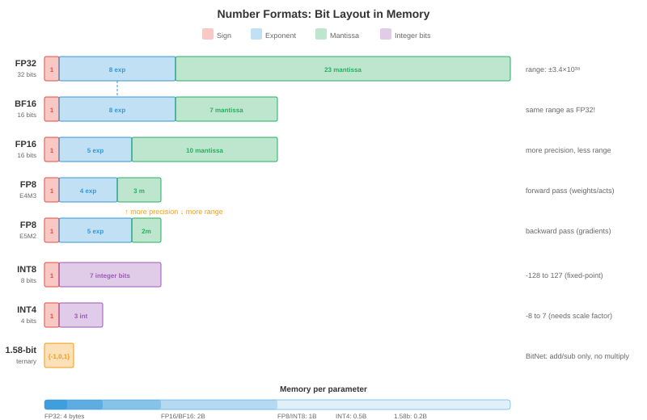
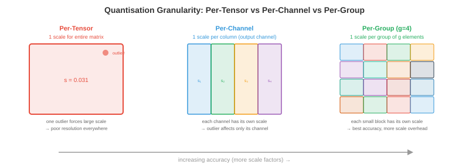
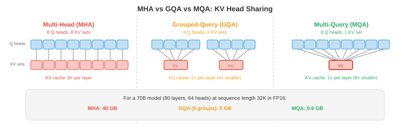

Maths, CS & AI Compendium · Chapter 17
Every Token Pays a Setup
To write one word, a language model reads every one of its weights out of memory. That read is a setup, paid again on every step, and almost everything in this chapter is a way to shrink it, share it or spread it. Shrinking it is quantisation, and quantisation is measurement. Sharing it is batching, and batching is lot sizing against a takt time.
The chapter has five source files: quantisation, efficient architectures, serving and batching, edge inference, and scaling and deployment. This sheet covers all five at the level of one server. Sheet 18 takes up the plant: capacity planning across many servers, redundancy and system design. Sheet 16 covers the hardware underneath, and this sheet uses only one fact from it: reading memory, not arithmetic, sets the pace of generating text.
The headline is §14. Continuous batching, the scheduling method every modern server uses, runs at exactly the minimum lot size that meets takt, the quantity a production planner computes as setup time divided by (takt time minus time per piece). Nobody sets it that way. Little’s law forces it, and the same algebra gives the time per output token as \(t_w/(1-\rho)\), the queueing cliff of Sheet 13 part 2 §06 with no randomness in it. The second result is §06: the best-known weight quantiser, GPTQ, is a support-settlement problem, and the source prints its update with the wrong matrix.
| Source says | Computed | Where |
|---|---|---|
| “2× again for INT8 vs FP16” on each halving, and “989 TFLOPS in FP8 vs 67 in FP32, a 15× difference” | The ladder gives 4× from FP32 to FP8. 989/67 = 14.8 mixes two kinds of rate, so the two statements cannot describe the same hardware. | §01 |
| MX formats: MXFP8 “~8” bits, MXINT8 “~8.5” | Same element bits, same shared exponent, so the same cost: 8.25 bits with a block of 32, 8.5 with a block of 16. | §02 |
| Outlier task prints that the outliers “waste 100% of the quantisation range” | The printed 99.6% is the share of channels that are normal. The normal channels use 5 of 255 levels, 1.6% of the range, and 72% of their values round to zero. | §04 |
| Per-channel scaling of activations “succeeds” | Scales along the summed dimension cannot be taken out of an integer matrix product. SmoothQuant exists because of this, and beats it: 0.38% against 0.79%. | §04 |
| GPTQ update \(W_{:,j+1:} \mathrel{-}= (\hat W_{:,j}-W_{:,j})H_{j,j+1:}/H_{jj}\) | The update needs the inverse Hessian. As printed it removes 13–16% of plain rounding’s error; the correct update removes 48–49%. | §06 |
| KV cache of a 70B model at 128K tokens in FP16: “330 GB” | 343.6 GB (320 GiB). The source’s own code prints 343.6. With 8 key-value heads it is 42.9 GB. | §09 |
| “~1.3 KB per token per layer, ~100 KB per token” for the 70B (file 03) | File 01’s own parameters give 32 KB per layer, 2.6 MB per token. With 8 key-value heads: 4 KB and 328 KB. | §09 |
| Figure: MHA/GQA/MQA cache for the 70B at 32K in FP16 is 40/5/0.6 GB | 85.9/10.7/1.3 GB. The figure’s numbers are the 1-byte values. | §10 |
| Sliding window of 128 on 512 tokens: “Reduction: 4.0x” | That compares two-way full attention with a one-way window. Like for like it is 2.29×. | §10 |
| Speculative decoding speedup ≈ \(k \times\) acceptance / cost ratio | \((1-\alpha^{k+1})/[(1-\alpha)(kc+1)]\). At \(\alpha = 0.5\), \(k = 5\): 1.31×, where the source’s form gives 1.67×. | §18 |
| A 30-minute conversation on a 3–5 W model “drains ~5%” of a phone battery | 10–16% of an assumed 15.4 Wh battery if it generates throughout. 5% needs the model idle about two thirds of the time. | §17 |
| FedAvg: \(W_{\text{new}} = \frac1K\sum_k W_k\) | Weight each device by its data. The weighted mean equals the central step to \(10^{-16}\); the plain mean is off by 0.058. | §17 |
| 100,000 GPUs “~$3 billion per year” | $7.0 billion at the source’s own $8 per GPU-hour. | §19 |
| Tensor parallelism: “an all-reduce aggregates” a column split, then \(Y = \text{concat}(Y_i)\) | A column split is concatenated (all-gather); a row split is summed (all-reduce). The quoted 0.1 ms and 3 ms per layer need messages of about 5,500 tokens, not one. | §19 |
The verdict column follows the series’ convention. Identity means the same formula or procedure, checked numerically. Same structure means the parts map one to one but the numbers are not shared. Breaks means the correspondence holds in form and fails in substance, and the section says where.
| What you already know | What this chapter calls it | Verdict |
|---|---|---|
| Least count; reading uncertainty \(\Delta/\sqrt{12}\) | Quantisation step; noise variance \(\Delta^2/12\) | Identity while the spread is at least half a step. See §03. |
| A dial gauge against significant figures | Integer formats against floating point | Identity, Sheet 13 part 1 §10. See §02. |
| Choosing a gauge range for each feature | Per-channel and per-token scales | Breaks on the dimension that gets summed. See §04. |
| Range against resolution: clip or lose divisions | Calibration by clipping | Identity, with a computable optimum. See §05. |
| Support settlement; static condensation | GPTQ’s error compensation | Identity. See §06. |
| Baseline against chain dimensioning | Compensated against independent rounding | Identity when all inputs agree. See §06. |
| RSS tolerance stack; a systematic drift | Rounding error through many layers | Identity in growth law. See §08. |
| A mixed-model lot, whose setup grows with variety | A mixture-of-experts model under batching | Same structure. See §11. |
| Lot time = setup + quantity × time per piece | Decode step = weight read + batch × per-sequence read | Identity in the algebra; the picture is a furnace load. See §13. |
| Minimum lot to meet takt, \(S/(T-p)\) | The batch continuous batching settles at | Identity, by Little’s law. The headline. See §14. |
| Lead time, cycle time, takt time | Time per output token, time per token served, demand | Corrects the bank: latency is lead time, not cycle time. See §14. |
| The utilisation cliff \(1/(1-\rho)\) | Time per output token \(t_w/(1-\rho)\) | Same shape, with no randomness. See §14. |
| One-piece flow beats batch-and-queue | Batch size 1 against continuous batching | Breaks. This setup cannot be reduced to zero. See §15. |
| Roughing and finishing on separate machines | Disaggregated prefill and decode | Same structure. See §16. |
| SMED; a single-user machine | Quantisation at the edge, where batch size is 1 | Same role. See §17. |
| Branch prediction, Sheet 13 part 1 §14 | Speculative decoding | Same structure. See §18. |
| — | Rejection sampling, the rule that makes it exact | No counterpart. Learn it cold. See §18. |
Inference means running a trained model to get answers from it, as opposed to training
it. A language model answers one token at a time; a token is a word or a piece of
one. The source opens with the number that sets the whole chapter: a model with 70 billion
weights, stored at 16 bits (2 bytes) each, needs 140 GB of memory. At 8 bits it needs 70 GB,
at 4 bits 35 GB ([Ch17 s01]). One data-centre accelerator holds about 80 GB
(reported), so the format decides whether the model fits on one device at all.
The second fact is the one this sheet is built on. Generating a token means pushing one vector through every layer, and every layer multiplies that vector by its weight matrix. Each weight is fetched from memory, used once, and not needed again until the next token. A memory system delivers a fixed number of bytes per second (its bandwidth), so the fastest possible rate is
The source’s own estimator in file 04 is exactly this bound. At 200 GB/s a 7B model
gives 57 tokens per second at 4 bits and 29 at 8 bits; at 50 GB/s a 3.8B model gives 26
([Ch17 s01]). Halve the bytes and the bound doubles, which is why the source can
say quantisation gives “nearly linear speedups”. The arithmetic units sit mostly
idle; Sheet 16 calls this being bandwidth-bound and draws it as a roofline.
Read the bound as a production engineer would. Before a step can produce anything, every weight must come out of memory. That cost is the same whether the step produces a token for one user or for a hundred, because the hundred can all use the weights while they are on chip. A cost paid once per run and independent of how many pieces the run makes is a setup, and Sheet 14 part 1 §04 showed how a setup is shared over a lot.
The rest of the chapter sorts by what each technique does to this setup. Quantisation shrinks it (§§02–09). Efficient architectures cut the work around it (§§10–12). Batching shares it between users (§§13–16). Edge devices have one user and cannot share it (§17). Speculative decoding spreads it over several tokens of one user (§18).
File 01 says each halving of precision doubles arithmetic throughput, FP32 to FP16 to INT8
to INT4. Two lines later it quotes 989 TFLOPS for FP8 against 67 for FP32, a 14.8×
ratio ([Ch17 s01]). The ladder gives 4× for two halvings. Both cannot be
rates of the same kind of operation on the same chip. The usual explanation, reported and
not derived here, is that 67 is the rate of the ordinary FP32 units and 989 is the dense
FP16 rate of the matrix units, with FP8 twice that. For this chapter it hardly matters:
decode is limited by bytes, not by FLOPs.
Sheet 13 part 1 §10 set up the bridge this section uses. A floating-point number has constant relative precision, a fixed number of significant figures at every magnitude. A fixed-point number, like a dial gauge, has constant absolute precision, the same smallest division everywhere. The source’s table of formats sorts into those two families, and the figures each one carries can be computed from its bit layout.

| Format | Exp / mant | Largest value | Figures | Behaves like |
|---|---|---|---|---|
| FP32 | 8 / 23 | 3.4×1038 | 7.22 | Significant figures |
| FP16 | 5 / 10 | 65,504 | 3.31 | Significant figures, short range |
| BF16 | 8 / 7 | 3.39×1038 | 2.41 | Fewer figures, FP32’s range |
| FP8 E4M3 | 4 / 3 | 448 | 1.20 | About one figure |
| FP8 E5M2 | 5 / 2 | 57,344 | 0.90 | Range over figures |
| INT8 with a scale | — | 127 × scale | 2.41 at full scale | A dial gauge with 255 divisions |
| INT4 with a scale | — | 7 × scale | 1.18 at full scale | A gauge with 15 divisions |
The integer rows need the qualifier “at full scale”. An INT8 tensor carries 2.41
figures for a value at the top of its range and 1.41 for a value a tenth as large
([Ch17 s02]), exactly as a dial gauge reading 0.08 mm on a 1 mm range has one
useful figure. To use integers at all, every tensor (or every row, or every block) gets a
scale, a float that converts counts back to values:
The scale \(s\) is the least count. The zero point \(z\) shifts the scale for one-sided data, as a gauge zeroed off the datum would. Symmetric quantisation sets \(z = 0\) and \(s = \max|x|/127\), which is ranging the gauge to the largest reading.
The source’s microscaling (MX) formats give a block of elements one shared 8-bit
exponent and each element its own few mantissa bits. That is a multi-channel recorder with
one range switch per bank: within a bank every channel reads on the same scale, and banks
can sit on different ranges. GGUF’s Q4_0, in the source’s llama.cpp list, is the
same idea with integers: 32 four-bit counts share one 16-bit scale (layout reported), so it
costs 4.5 bits per weight. That is why the source’s own table lists Llama 3.1 8B at
about 4.5 GB in “Q4”: \(8\times10^9 \times 4.5/8 = 4.5\) GB. The same
accounting puts the 70B at 39.4 GB, not 35 ([Ch17 s02]).
The shared exponent adds 8 bits per block. With a block of 32 that is 0.25 bits per
element, with 16 it is 0.5. The source lists MXFP6 at ~6.5, MXFP4 at ~4.5 and MXINT8 at
~8.5, which is the block-of-16 accounting, and MXFP8 at ~8. MXFP8 and MXINT8 both have 8
element bits and the same shared exponent, so they cost the same: 8.25 at a block of 32
(the standard’s block size, reported), 8.5 at 16 ([Ch17 s02]).
At the far end, BitNet restricts every weight to \(\{-1, 0, +1\}\). Three states carry
\(\log_2 3 = 1.585\) bits, so a 70B model needs 13.9 GB, close to the source’s
“~15 GB”. Multiplying by −1, 0 or +1 needs no multiplier: a ternary matrix
product is a sum of some inputs minus a sum of others, which the script confirms to
\(4\times10^{-15}\) ([Ch17 s07]). Whether such a model is as good as a 16-bit
one is a training question this sheet cannot compute.
Round a reading to the nearest division \(\Delta\) and the error lies somewhere in \([-\Delta/2, +\Delta/2]\). If the reading spans many divisions, nothing favours any part of that interval, so the error is uniform on it. A uniform distribution of width \(\Delta\) has
The rule for a measurement whose only knowledge is “somewhere within ±a”
is to treat it as rectangular and quote a standard uncertainty of \(a/\sqrt3\). With
\(a = \Delta/2\) that is \(\Delta/\sqrt{12} = 0.2887\,\Delta\), the square root of
\(\Delta^2/12\) exactly ([Ch17 s03]). Sheet 09 §03 met the same 1/12 in an
audio converter. It is one fact about rounding, and it holds wherever rounding happens.
The source’s first coding task measures it without saying so. It quantises a
1024×1024 matrix of weights drawn with standard deviation 0.02 to INT8. Ported to
numpy, the step is \(\Delta = 7.87\times10^{-4}\), the measured error variance is
\(5.157\times10^{-8}\) against \(\Delta^2/12 = 5.163\times10^{-8}\), the mean absolute
error is \(\Delta/4\) to 0.1%, and the largest error is \(\Delta/2\) ([Ch17 s03]).
The relative error it prints, 1.23%, is just \(\Delta/4\) divided by the mean size of a
weight.
The useful quantity is the signal-to-noise ratio, the signal’s variance over the error’s. With the uniform model it is \(12(\sigma/\Delta)^2\): set by how many divisions one standard deviation spans, and by nothing else. That is the whole of quantisation in one ratio, and the next section is about keeping \(\sigma/\Delta\) large.
The uniform model assumes the reading spans many divisions. Sample Gaussian readings and
compare ([Ch17 s03]):
- \(\sigma/\Delta \ge 0.5\): measured error variance within 1% of \(\Delta^2/12\), and the signal-to-noise ratio equals \(12(\sigma/\Delta)^2\) to two decimals.
- \(\sigma/\Delta = 0.25\): 95% of readings round to zero and the error variance is only 0.65 of \(\Delta^2/12\).
- \(\sigma/\Delta = 0.1\): every reading rounds to zero. The error is the signal, so the ratio is exactly 1, whatever the model says.
So the failure is not that the error grows past \(\Delta^2/12\). It is that the reading has gone below the least count, and the gauge reports zero.
A tensor gets one scale, or one per row, or one per block. The source calls this granularity: per-tensor, per-channel, per-group, per-token. The reason it matters is the reason a metrology lab does not measure a 0.1 mm runout with a gauge ranged for 25 mm. One large reading sets the range; every small reading on the same scale loses its figures.

The source’s second coding task makes this concrete. Activations for 32 tokens across
512 channels have standard deviation 0.1, except channel 0 (scaled 100×) and channel 1
(50×). One scale for the whole tensor gives a mean error of 0.0535; one scale per
channel gives 0.0006, 89 times smaller ([Ch17 s04]). The measurement model
explains the number. The shared step is \(\Delta = 0.218\), so a normal channel has
\(\sigma/\Delta = 0.46\): just inside the range where \(\Delta^2/12\) holds. Measured, its error
variance is 0.00385 against a predicted 0.00397, and its signal-to-noise ratio is 2.61
against \(12(0.46)^2 = 2.53\). The model predicted the damage. It is not noise. The normal
channels are being read on a gauge one division of which is twice their spread.
Its last line reads “Outlier channels waste 100% of the quantisation range for 0.4% of
channels”. The 100% (99.6% before rounding) is \(510/512\), the share of channels that
are not outliers. What it means to say is measured directly: the normal channels
use 5 of the 255 levels, \(-2\) to \(+2\), which is 1.6% of the range, and 72% of their
values round to zero ([Ch17 s04]). The conclusion survives. The number printed
under it measures something else.
So per-channel scales look like the answer. For weights they are: each output channel of a weight matrix gets its own scale, as Fig. 17.2 shows. For activations, which is what the task scales per channel, there is a catch the source does not mention, and it is the whole reason the next method exists.
A layer computes \(y_{ij} = \sum_k x_{ik} w_{kj}\): it adds up products over the channel index \(k\). The point of integer arithmetic is to do that sum in integers and convert once at the end. Write \(x_{ik} = a_i\,q_{ik}\) with one scale per token (row) and \(w_{kj} = b_j\,r_{kj}\) with one scale per output column:
Both scales come outside the sum, and the script confirms the integer product then
rescaled matches to \(5\times10^{-15}\). Now give the activations one scale per
channel, \(x_{ik} = c_k\,q_{ik}\). The scale sits inside the sum,
\(\sum_k c_k\,q_{ik} r_{kj}\), and there is no single factor per output that recovers it:
the factor each output would need varies with a spread 22 times its mean
([Ch17 s04]). Readings from gauges on different ranges must each be converted
before they can be added, and converting each one is the multiplication integer arithmetic
was meant to remove.
Per-channel scales are free on the dimensions that are not summed (tokens, output channels) and cost a multiply per term on the one that is.
The source gives SmoothQuant one line. Divide activation channel \(k\) by \(s_k\) and multiply
row \(k\) of the weights by the same \(s_k\). The product is unchanged, because
\(X\,\mathrm{diag}(s)^{-1}\,\mathrm{diag}(s)\,W = XW\), to \(2\times10^{-15}\). The outlier
channel arrives already shrunk, and the extra size lands in one row of the weights, where
a per-output-column weight scale absorbs it. With \(s_k = \sqrt{\max|x_k| / \max|w_k|}\) on
a 16×64 example with one channel 60× the rest, the relative output error at
8 bits is ([Ch17 s04]):
- one scale for all activations: 4.20%;
- one scale per token: 2.32%, because every token contains the outlier channel;
- one scale per activation channel, not runnable in an integer product: 0.79%;
- SmoothQuant, then per token and per output column: 0.38%.
Channel 0 runs 100 times larger than the other 31. With INT8 and one scale for the whole tensor, what share of the other channels’ readings round to zero?
normal channels
to zero
measured
predicted
measured
predicted
error
integer product?
Post-training quantisation (PTQ) quantises a finished model without retraining. A calibration set of a few hundred sample inputs is run through it to see how large each tensor’s values get, and the scales are chosen from that. The source lists four rules: min-max (range to the largest value seen), a percentile such as the 99.99th, the clip that minimises mean squared error, and a rule that matches distributions (KL divergence).
Range a gauge too wide and you waste divisions; too narrow and readings go off scale. A
quantiser has the same two errors. Inside the range the error is \(\Delta^2/12\), which
grows with the range; outside it, values are clipped to the end level and the error is
whatever sticks out. The total has a minimum, and for Gaussian data it can be computed
([Ch17 s05]):
- 4 bits: clip at \(2.47\sigma\). That clips 1.34% of values, and gives 3.17 times less error than ranging to the largest of a million samples, which sits at \(5.0\sigma\).
- 8 bits: clip at \(3.92\sigma\), for 1.41 times less error than min-max.
The fewer divisions you have, the more it pays to let the rare reading go off scale. That is why min-max is fine at 8 bits and poor at 4, and why the source finds PTQ “works well for INT8” and “drops significantly” at INT4.
A gauge is ranged for a part whose size you know. A model is ranged on a few hundred inputs and then serves millions it has not seen. Weights are fixed, so their range is known exactly. Activations change with every input, so a static scale is a forecast; the source’s dynamic quantisation measures the range afresh for each input, at the cost of a pass over the data first.
Quantisation-aware training (QAT) rounds the weights during training so the model learns around the rounding. Rounding is a staircase with zero slope almost everywhere, which would stop gradient descent dead, so the backward pass pretends the staircase is the line \(y = x\): the straight-through estimator. It is not the derivative of anything, and that it works is an empirical result (reported). The source’s cost argument is a setup-and-run argument: QAT is a large one-time cost, worth it when the quantised model will be run a very large number of times.
Rounding each weight to its nearest level (“round to nearest”, RTN) treats the weights as independent. They are not. A layer’s output is \(Xw\) for a row of weights \(w\) and a matrix \(X\) of calibration inputs, so a change \(\delta\) in the weights changes the output by \(X\delta\), and the squared output error is
\(H\) is symmetric and positive semi-definite, and \(E\) is a quadratic form in \(\delta\). You have met that object as \(\tfrac12 u^{\mathsf T}Ku\): \(H\) is a stiffness matrix and \(E\) is twice a strain energy. When two inputs are correlated, the off-diagonal term couples their weights, as a member couples two joints.
GPTQ quantises one column of weights at a time. Rounding weight \(j\) prescribes its error, \(\delta_j = q_j - w_j\). The weights not yet quantised are still free, so GPTQ moves them to whatever minimises \(E\) given that prescribed value. Minimising a quadratic energy with one displacement prescribed is a problem you have solved by hand:
A support of an indeterminate structure settles by \(\delta_j\); the free joints displace
by \(-K_{rr}^{-1}K_{rj}\,\delta_j\), the static response that minimises strain energy with that
displacement held. The first form above is exactly that, with \(H\) for \(K\). It is the
same condensation Sheet 10 §09 met as Guyan reduction. The second form, with the
inverse matrix, is the same vector written through a Schur-complement identity; the script
confirms the two agree to \(5\times10^{-12}\) ([Ch17 s06]). The inverse form
is the one GPTQ uses, because it can be updated cheaply as columns are fixed one after
another.
On a layer with 64 correlated inputs and 48 outputs, the output error relative to the
output is ([Ch17 s06]): 3-bit, RTN 0.0602 against compensated 0.0309; 4-bit,
0.0112 against 0.0059. Letting the free weights settle removes 48–49% of the error.
The source writes the update as \(W_{:,j+1:} \mathrel{-}= (\hat W_{:,j}-W_{:,j})\,H_{j,j+1:}/H_{jj}\): the coupling row of \(H\) itself, divided by the stiffness of the settled support. Check it on two weights, \(H = \begin{bmatrix}a&b\\b&c\end{bmatrix}\). Minimising \(a\delta_1^2 + 2b\delta_1\delta_2 + c\delta_2^2\) over \(\delta_2\) gives \(\delta_2 = -b\,\delta_1/c\), divided by the free joint’s stiffness. The printed rule gives \(-b\,\delta_1/a\). The sign is right and the denominator belongs to the wrong joint; with more weights it also ignores how the free weights couple to each other.
Run as printed on the same layer, it removes 13% of RTN’s error at 3 bits and 16% at
4, against 49% and 48% for the correct update ([Ch17 s06]). It helps a little,
because it pushes the error in the right direction, and it is not GPTQ.
Take the extreme case where every input carries the same signal, so the output is just the
sum of the weights and \(H = \mathbf{1}\mathbf{1}^{\mathsf T}\). Rounding 64 weights
independently to a step of 2/7 leaves the sum wrong by 1.005, the chain-dimensioning
result where every rounding stacks. With compensation, each rounding error is absorbed by
the weights still free, and the total ends within half a step: 0.138 against a bound of
0.143 ([Ch17 s06]). That is baseline dimensioning, every feature located from
the datum so errors cannot accumulate, and the same point Sheet 04 §05 made about
tolerance stacks.
A structure’s stiffness comes from its geometry and is known. \(H\) is assembled from a calibration sample and is only as good as that sample. When an input is always zero, or two inputs always move together, \(H\) is singular: the structure has a mechanism. GPTQ adds a small number to the diagonal before inverting (reported), which is grounding every joint with a weak spring so the stiffness matrix can be inverted. And the energy being minimised is the error at this layer’s output on the sample, not the error of the whole model.
Since decode is limited by reading weights (§01), the source’s favourite methods quantise only the weights, to 4 bits or fewer, and keep activations in 16-bit floats. The weights are expanded back to floats inside the arithmetic unit, so memory and bandwidth shrink while the arithmetic stays as it was. Each method attacks the same enemy, a few large values that set the range for everything else, in a different way.
| Method | What it does | In gauge terms |
|---|---|---|
| GPTQ | Rounds column by column and lets the rest settle | Baseline dimensioning (§06) |
| AWQ | Scales up the 1–3% of weight channels that meet large activations, scales the activations down | SmoothQuant’s trick (§04) aimed at the important channels |
| GGUF k-quants | Spends more bits on blocks that matter more | Finer gauges on critical dimensions |
| QuIP | Rotates the weight matrix by a random orthogonal matrix first | Mohr’s circle: same tensor, different axes |
| SpQR | Keeps the 0.1–1% worst outliers in 16 bits, stored sparsely | Measure a few critical features on the CMM, the rest by gauge |
| HQQ | Solves for scales with no calibration data | Range from the drawing, not from samples |
| AQLM | Writes each group of 8 weights as a sum of entries from two codebooks | Sheet 10 §06’s residual quantisation, with codebooks fitted jointly |
Rotating the axes cannot change a stress tensor; it only changes how the tensor is shared among components. A uniaxial stress of 100 MPa, read on axes at 45°, shows 50 normal on each and 50 shear. Principal axes concentrate a tensor; QuIP wants the opposite, axes on which no single entry stands out. Multiply the weight matrix on both sides by random orthogonal matrices, quantise, and rotate back. The product is unchanged, because \(Wx = (U^{\mathsf T}U)\,W(Q^{\mathsf T}Q)\,x\).
The source’s own example is “one weight is 100 and the rest are ~1”. On a
256×256 matrix of that kind, the largest entry is 93 times the typical one, and INT4
with one scale loses 93% of the matrix. After a random rotation the largest entry is 4.7
times the typical one, and the error is 19% ([Ch17 s07]).
A stress tensor does not care which axes you read it on. A quantised matrix stored on rotated axes needs its inputs rotated to match on every use. QuIP makes that affordable with structured orthogonal matrices that cost far less than a full multiply (reported). It is extra work bought to make rounding cheaper.
AQLM’s arithmetic is easy to check: two codebooks of 256 entries are two 8-bit indices
per group of 8 weights, so 2 bits per weight before the codebooks themselves
([Ch17 s07]). FP8 training uses E4M3 for the forward pass and E5M2 for
gradients: more figures where values are well behaved, more range where they span many
decades. The “loss scaling” it needs multiplies the gradients by a large factor
before they are stored and divides afterwards, which is changing an amplifier’s gain so
a small signal sits inside the converter’s range.
A model has dozens of layers, and every layer rounds. The source mentions error accumulation once, for the KV cache. It deserves a law, and you already own it. Modern language models pass a running total, the residual stream, from block to block, and each block adds its contribution to it. That is a stack of parts, and each rounding is a part’s deviation.
Sheet 04 §05 derived root-sum-square tolerance stacking: independent zero-mean
deviations add in variance, so the stack grows as \(\sqrt{n}\); a common drift, such as tool
wear on every part in a shift, adds directly, so it grows as \(n\). Round-to-nearest gives
zero-mean errors; truncation (always rounding down) gives a bias of \(-\Delta/2\) every time.
Simulated on a residual stream of 256 values, rounded to 0.01 after every block
([Ch17 s08]):
- rounding: RMS error 0.0058, 0.0119, 0.0270 at 4, 16 and 64 blocks; each fourfold increase in depth multiplies it by 2.06 and 2.26, against RSS’s 2;
- truncating: 0.0210, 0.0828, 0.3548; factors 3.95 and 4.28, against linear stacking’s 4.
A stacked part passes a deviation on unchanged. A layer multiplies it by its own gain, so an early error is amplified by every later layer, and the rounding factors come out a little above 2 for that reason. Errors at a layer with large gain matter more than the same rounding elsewhere, which is the source’s sensitivity analysis under another name: quantise one layer at a time, measure the damage, and give more bits where it is largest. Tolerance allocation does exactly that with sensitivity coefficients \(\partial y/\partial x_i\), tightening the tolerance where the coefficient is large.
Attention lets each new token look back at every earlier one. To do that it needs, for every earlier token and every layer, a key vector and a value vector. Recomputing them each step would repeat all the earlier work, so they are stored: the KV cache. It grows by one token’s worth per step, and it belongs to one request.
The source writes \(n_{\text{heads}}\) where this writes \(n_{\text{kv heads}}\). The two are the same in plain multi-head attention and differ by 8× in the grouped-query attention its next file says most modern models use (§10). The distinction is where the numbers go wrong.
For a 70B model with 80 layers, 64 heads of 128 dimensions, 131,072 tokens in FP16, the
prose says 330 GB. The product is \(343{,}597{,}383{,}680\) bytes: 343.6 GB, or exactly
320 GiB ([Ch17 s09]). The coding task at the end of the same file prints
343.6. Neither binary nor decimal units give 330.
The 70B model the source has in mind uses 8 key-value heads, not 64 (reported for
Llama-2-70B), so its real cache at that length is 42.9 GB. The same slip runs through the
chapter. File 03 sizes a token of this model’s cache at “~1.3 KB per layer,
~100 KB total”; file 01’s parameters give 32 KB per layer and 2.6 MB per token,
and with 8 key-value heads it is 4 KB and 328 KB. File 05’s 2,000-token shared
prompt “saves ~200 MB”; at 328 KB a token it is 655 MB, and at file 01’s
figures 5.2 GB ([Ch17 s09]).
None of this changes a conclusion that is a ratio, such as how much paging saves (§16). It changes every conclusion that is a number of gigabytes.
Each active request holds its own cache in memory, the cache grows one token at a time, and it is thrown away when the request finishes. That is work-in-progress inventory, held in the stores, one traveller per job. Memory is the stores, and when it fills, no more jobs can be released to the floor. §14 shows this is usually what limits a server, and Little’s law says how much of it you will hold.
KV-cache quantisation stores keys and values in 8 or 4 bits. The source calls it
“multiplicatively beneficial”, and §14 makes that exact: it halves the time
each sequence costs per step and doubles how many sequences fit, and on the example
server those two together double the capacity, from 2,500 to 5,000 tokens per second
([Ch17 s14]).
File 02 turns from cheaper operations to fewer of them. Most of it is about attention, whose cost grows with the square of the sequence length \(n\) because every token looks at every earlier one.
- StreamingLLM keeps the first few tokens permanently (the “attention sinks”, which take a large share of attention whatever they say) plus a rolling window of the most recent ones. The cache stops growing. What falls out of the window is gone.
- Sliding-window attention lets each token see only the last \(w\). After \(L\) layers information can travel about \(L \times w\) tokens, the way a disturbance crosses a lattice one neighbour per step.
- Linear attention regroups a product. Softmax attention computes \((QK^{\mathsf T})V\), an \(n\times n\) matrix first. Replace the softmax by a feature map \(\phi\) and the product can be taken as \(\phi(Q)\,(\phi(K)^{\mathsf T}V)\), a small \(d\times d\) matrix first: cost \(nd^2\) instead of \(n^2 d\). Matrix multiplication is associative, so this is exact for the new model. It is not the same model, because the softmax cannot be regrouped.
- State-space models such as Mamba are Sheet 07 §07’s discrete state-space systems, and the cache is replaced by a fixed-size state.
- Flash attention computes ordinary attention exactly, in tiles that stay in fast on-chip memory; Sheet 16 is where it belongs. Ring attention spreads one long sequence over several devices.
The coding task prints “Reduction: 4.0x” for a window of 128 on 512 tokens, as
\(n^2/(nw)\). But its full-attention function lets every token see every other, including
later ones, while its window looks only backwards. A language model only ever looks
backwards, so the fair baseline is the triangle: 131,328 scores against the window’s
57,408, a reduction of 2.29× ([Ch17 s10]). For long sequences the
ratio tends to \(n/2w\), half the printed figure.
The cache itself shrinks if heads share keys and values. Multi-query attention gives
all heads one key-value set; grouped-query attention gives each group of heads one. At
32K tokens with 32 heads of 128 dimensions, the source’s task gives 537 MB per layer for
separate sets, 134 MB with 8 groups and 16.8 MB with one: 4× and 32× smaller
([Ch17 s10]). Multi-head latent attention stores a compressed vector per
token and rebuilds keys and values from it, trading a little arithmetic for a lot of memory,
which is the right trade when memory is the constraint (its 93.3% reduction is reported).

[Ch17 s10]). Figure from the compendium.
A mixture-of-experts (MoE) model replaces one large block with several smaller
“experts” and sends each token to two of them. The source’s example has 8
experts, 46.7B weights in all and 12.9B used per token (figures reported), and calls it
“70B-class quality with 13B-class inference cost”. From those two numbers each
expert holds 5.63B weights and 1.63B are shared by every token ([Ch17 s11]).
The 13B-class cost is true for one token. But §01 said the cost that matters is the weight read per step, and a step serves a whole batch. Each token in the batch picks its own two experts, and the step must read every expert that any token picked.
A lot that mixes product variants needs the tooling for every variant present. One variant,
one setup; five variants, five. With uniform routing a token misses a given expert with
probability 6/8, so a batch of \(b\) tokens touches on average \(8\,(1-(3/4)^b)\) experts. The
formula matches simulation within 0.01, and the weight read per step follows
([Ch17 s11]):
- batch 1: 2 experts, 12.9B read, 28% of what a dense 46.7B model reads;
- batch 4: 5.47 experts, 32.4B, 69%;
- batch 8: 7.20 experts, 42.2B, 90%;
- batch 16: 7.92 experts, 46.2B, 99%.
Routing in real models is not uniform (reported), so the curve is an estimate of shape. The conclusion holds: at the batch sizes a server runs (§14), an MoE’s saving in weight reads is nearly gone, and what remains is the saving in arithmetic, 12.9B rather than 46.7B multiply-adds per token. The model still needs memory for all 46.7B. The source’s expert offloading and expert caching keep the rarely used experts further down the memory hierarchy, which is Sheet 13 part 1 §15’s material staging.
Distillation trains a small “student” to reproduce a large “teacher”. The student learns from the teacher’s full probability over the answers, not just the right answer, and the source says this carries more information.
A go/no-go check tells you pass or fail. A measured dimension tells you how far inside the band, which is why a variables sampling plan reaches the same assurance as an attributes plan with fewer samples. A label says “cat”. A teacher’s output says “cat 0.80, fox 0.15, dog 0.05”, which also says which wrong answers are nearly right. The temperature \(T\) in the source’s loss flattens those probabilities so the small ones carry weight. The bridge is in kind, not in a formula: no sample-size equation carries across.
Pruning removes weights. Removing scattered single weights saves memory but not time, because the hardware multiplies dense blocks; removing whole heads, neurons or layers leaves a smaller dense model. The one scattered pattern hardware does accelerate is 2:4, two zeros in every four weights, for about 2× (reported). Neural architecture search automates design against a target such as “under 5 ms on this phone”.
File 02’s third task ranks 8 attention heads by size and zeroes the smallest. Its heads
are random numbers, so their sizes all lie between 44.6 and 46.0 and the ranking means
nothing. Keeping 6, 4 or 2 heads gives errors of 0.495, 0.702 and 0.862, which are
\(\sqrt{2/8}\), \(\sqrt{4/8}\) and \(\sqrt{6/8}\) to within 0.006 ([Ch17 s12]): the
share removed, and nothing about importance. Its reshape also does not lay the
heads side by side per token, which would need a transpose first. That does not change the
printed error, which ignores order, but the comment calling it a concatenation is wrong.
Pruning by importance needs heads whose importance differs.